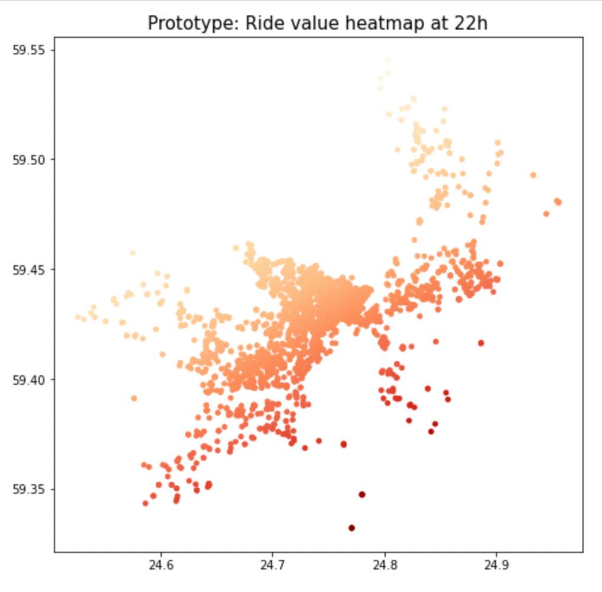
Built a model to predict ride value and created heatmap given timestamp and geometry to let rider move towards the more profitable areas. Also built a model to predict high ride value location with RMSE with 2km.

Built a python pipeline to acquire, clean, and vectorize +100GB Satellite Image on a server.
Built a crop classifier with +90% accuracy on validation data and SARIMA to estimate the yield.

Demonstration of product experimentation analysis approach, including A/B testing, A/A testing, and quasi-experimental testing for data driven product decision making.
 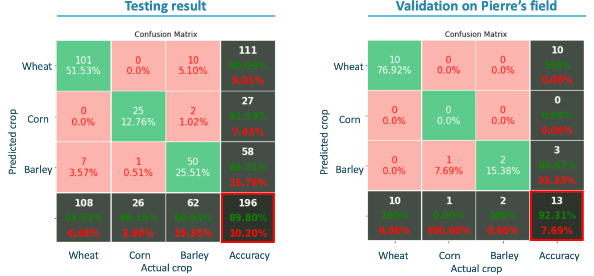
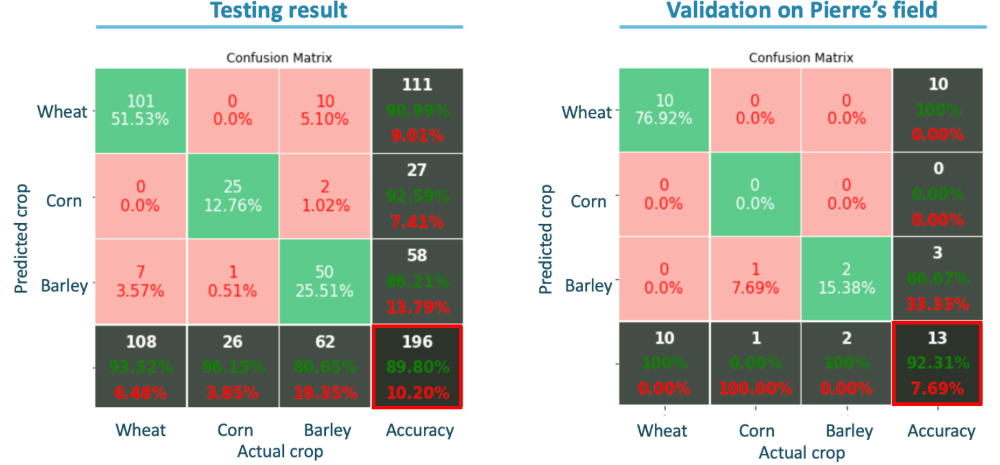
Using the processed satellite image data by the pipeline, built a crop classifier with +90% accuracy on validation and time series model to estimate the amount of crop yield.
As target data (yiled) was too small, used max CI value, which positively correlats to yield, as a target data.
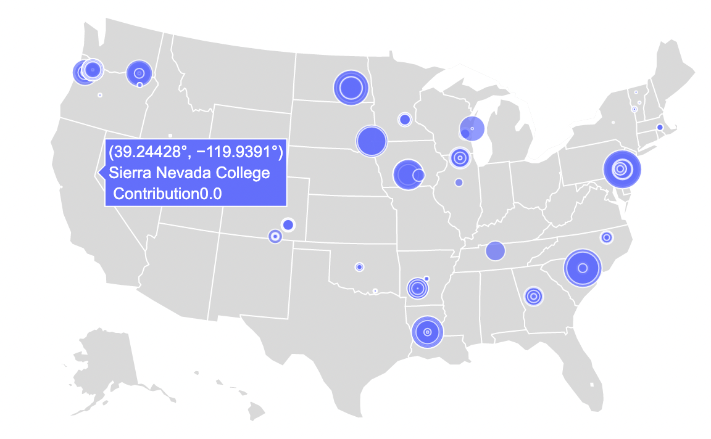

Enabled data-driven meal plan optimization of ~270 universities in the US by applying unsupervised learning
with feature selection and FAMD to identify the benchmarks. Applied the same concept of Datathon to a client's business problem.
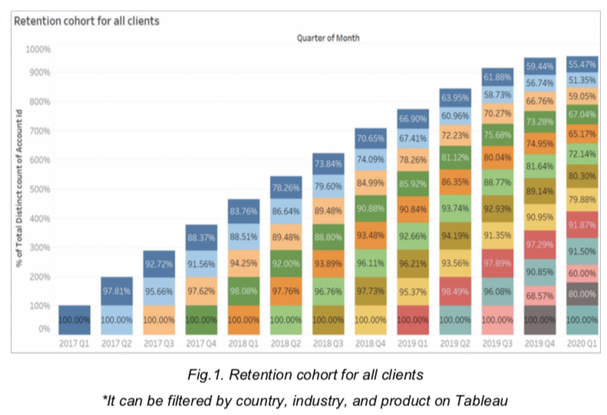
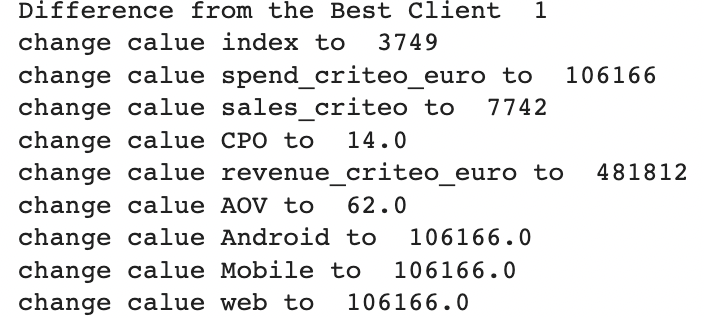
Applied unsupervised learning with FAMD to identify underperforming accounts in terms of tenure. 98% silhouette score.
Predicted churn date with survival models.
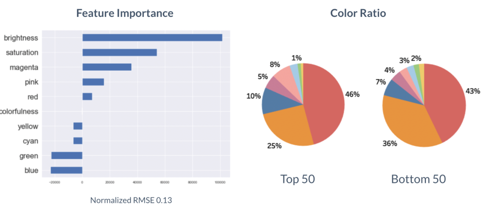
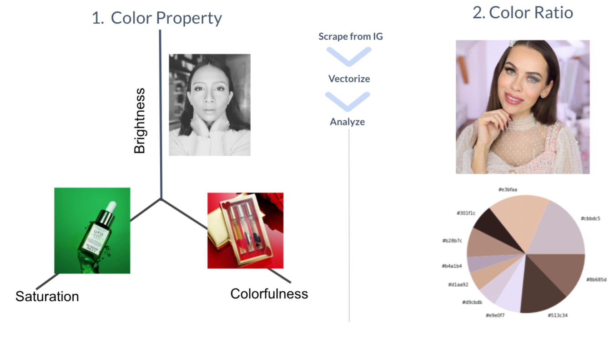
Scraped 200K images from Instagram to analyze image color and effect impact for business KPIs.
 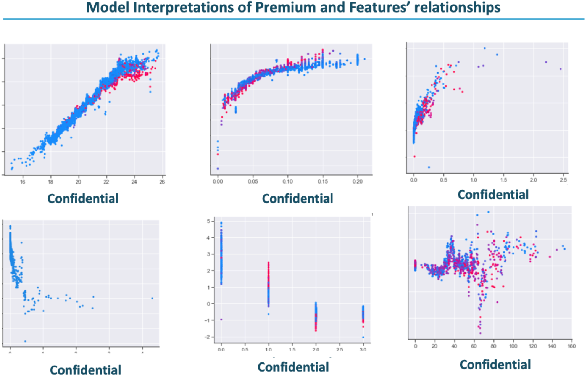
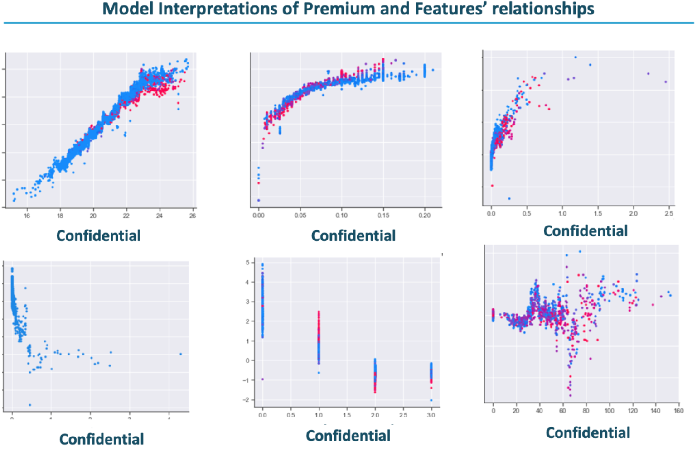
Predicted propaty damage and business interuption insurance premium. Improved the model performance by stacking 3 best models; CatBoost, XGBoost, and Random Forest.
Scraped earthquake data from NASA and added to the model.


Twetter sentimental and network analysis for a fashion brand. Identified customer pain point by negative sentiment analysis and key influencer within the network using centrality measure

Analysed the effectiveness of Covid19 policy strategy by each country.
Using John Hopkins Covid 19 and govermental data, clustered the country based on economic and social/ethnicity metrics and analysed each cluster using discontinuity analysis
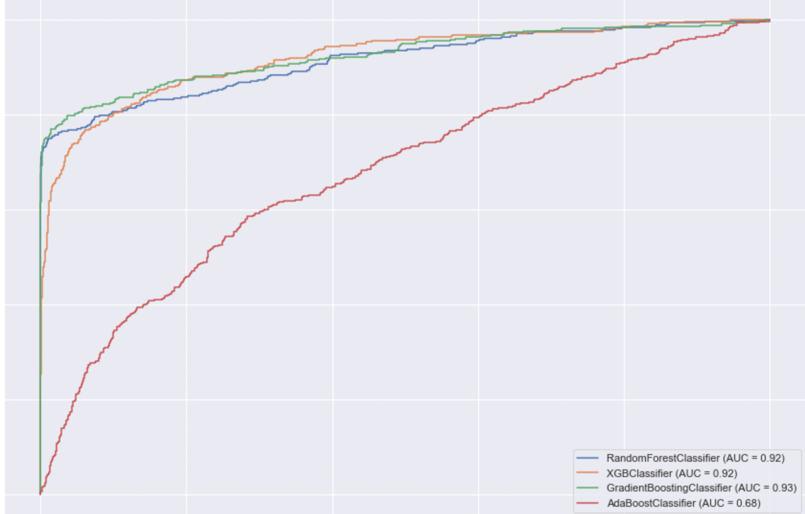
Increased the model performance significantly by finding the optimal balance of upsampling and down sampling where it maximizes the F-score.